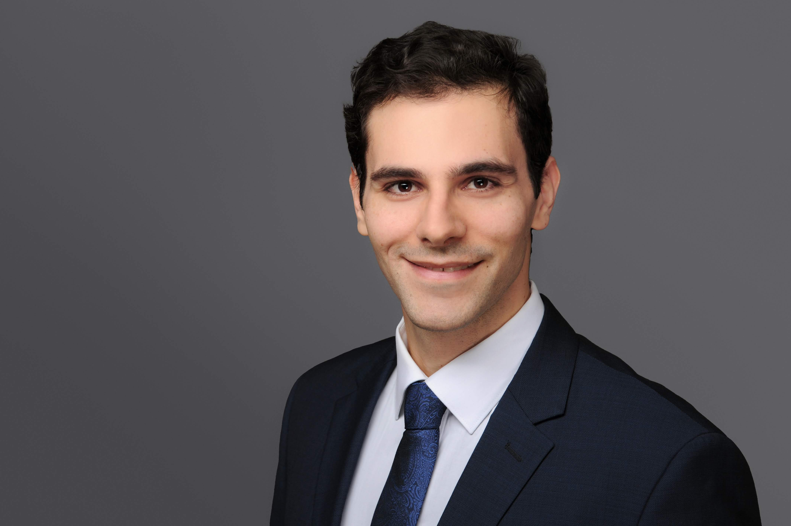

Omar Faruki

Summary
Experienced Software Engineer with a demonstrated history of working in the information technology and services industry. Skilled in Computer Science and Optimization. Strong engineering professional with a Master's Degree focused in Computer Science from Technische Universität München.
Education
- Master's Degree, Computer Science - Technical University of Munich
- Bachelor's Degree, Computer Science and Engineering - The German University in Cairo
Work Experience
-
Senior Information Technology Consultant - FourEnergy GmbH
Mar 2024 - Present
-
Software Engineer - Cognizant Netcentric
Nov 2016 - Jan 2024
- Tech Lead of UBS Email Launchpad Platform
- Key contributor to the development and launch of the new AMG Private Lounge User platform, which as of 2022 has a total of 115k registered users
- Heavily involved in designing and creating the architecture and implementation of different microservices hosted in AWS
- Overseeing release infrastructure by building releases and deploying on all environments including production
Skills
- Very good knowledge in: OOP, Java, AEM, Apache Sling, OSGi, HTL, Spring, JUnit, Jenkins, Maven, MySQL, PostgreSQL, Github Actions
- Good knowledge in: HTML, CSS, Javascript, AWS, Kubernetes, Docker, Terraform, Bash
- Some knowledge of: PHP, Python, C#, Play Framework, Django
Awards and Certifications
- AEM Certified Developer 2017